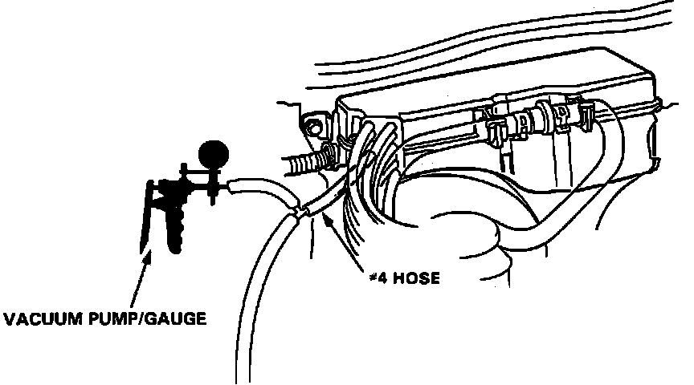
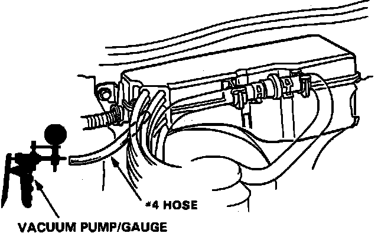

DTC 5
Code 5 indicates a malfunction of the MAP sensor or MAP sensor vacuum circuit.NOTE: This test requires the use of Acura sensor test harness part no. 07GMJ-ML80100 or equivalent. Wire colors referenced in testing procedures refer to test harness coloring and not the actual harness wire color.
1. Remove Alternator Sense fuse in underhood relay box for 10 seconds to reset ECU.
2. Start engine and idle.
3. Observe diagnostic LED.
Flashing code 5, proceed to step 5.
Not flashing, proceed to next step.
4. Malfunction is intermittent, check MAP sensor vacuum line for kinks or leaks. End of test.
5. Stop engine.
MAP Sensor Code 5 Testing:

6. Connect a vacuum tee in hose #4 at the vacuum control box and connect vacuum gauge to hose tee.
7. Start engine and check for vacuum.
Vacuum, proceed to step 9.
No vacuum, proceed to next step.
8. Repair vacuum hose #4 between MAP sensor and intake manifold. End of test.
MAP Sensor Code 5 Testing:

9. Connect vacuum pump to vacuum hose #4 and apply vacuum.
Vacuum holds, proceed to step 11.
Vacuum does not hold, proceed to next step.
10. Inspect vacuum hose to MAP sensor. If hose checks OK, replace MAP sensor. End of test.
MAP Sensor Testing:

11. With ignition off, connect sensor test harness between MAP sensor and connector.
12. Turn ignition on.
13. Check voltage between WHT and GRN terminals.
Approx. 3 volts, replace electronic control unit. End of test.
Not approx. 3 volts, replace MAP sensor.